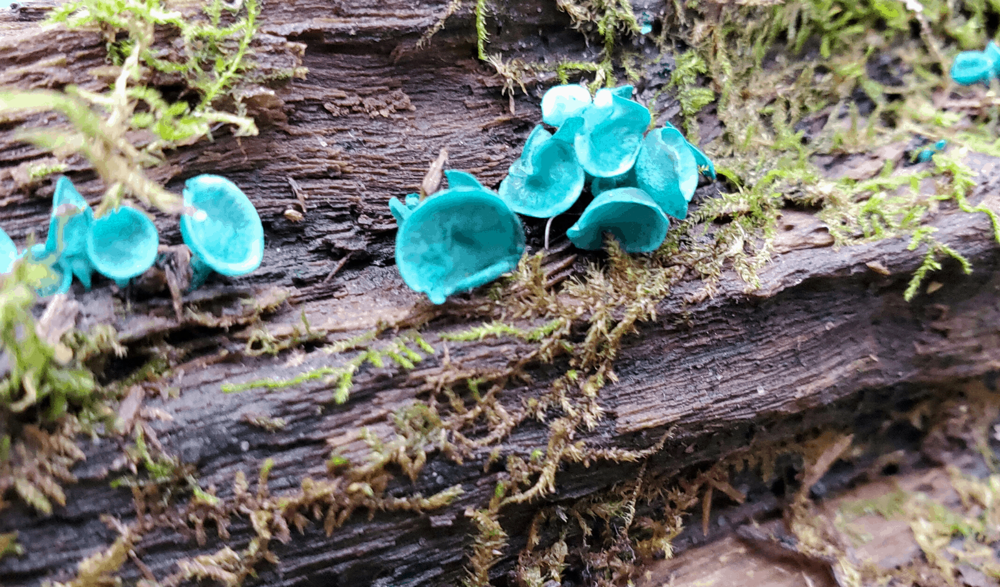

What Are Mushrooms?
A mushroom is the reproductive structure produced by some fungi. It is somewhat like the fruit of a plant, except that the "seeds" it produces are in fact millions of microscopic spores that form in the gills or pores underneath the mushroom's cap. The spores blow away into the wind, or are spread by other means, such as animal feeding. If they land on a suitable substrate (such as wood or soil) spores will germinate to form a network of microscopic rooting threads (mycelium) which penetrate into their new food source. Unlike the mushroom, which pops up then passes away quickly, the mycelium persists, often for many years, extracting nutrients and sending up its annual crop of mushrooms.
Mushrooms are fungi. They belong in a kingdom of their own, separate from plants and animals. Fungi differ from plants and animals in the way they obtain their nutrients. Generally, plants make their food using the sun's energy (photosynthesis), while animals eat, then internally digest, their food. Fungi do neither: their mycelium grows into or around the food source, secretes enzymes that digest the food externally, and the mycelium then absorbs the digested nutrients. There are exceptions to these generalizations; some organisms are placed into their respective kingdoms based on characteristics other than their feeding habits.